Atividades
-
Mergulho com Cilindro
Explore a belíssima fauna e flora marinha de Porto de Galinhas neste mergulho de batismo acompanhado de um instrutor com certificado SSI. Realizada pela Deep Dive.
Comprar ingresso

Palestras
-
Ônibus de Recife para Porto de Galinhas
 Saindo da Praça do Derby
Saindo da Praça do Derby
Saindo do Aeroporto
Passando por Porto de Galinhas -
Credenciamento

-
Keynote: Programadores Melhores
-
Sobre Memória
O fato de que Ruby não requer que os desenvolvedores gerenciem memória torna o nosso dia-a-dia muito menos frustrante. Ainda assim, existem cenários onde um descuido com nossos padrões e lógica irá nos trazer problemas. Nesta palestra serão mostradas falácias comuns (e outras não tão comuns) sobre memória, como identificá-las e como consertá-las. Mais
-
Construíndo um Single Page Application, Uma Página por Vez.
Construir uma single page application pode parecer simples com tantas ferramentas como AngularJS, Knockout, Backbone, etc. Porém pouco é dito sobre como transformar um aplicativo que já existe numa single page application.
Nesta palestra você irá aprender como um time de 4 pessoas construiu a próxima geração do 8tracks.com e como nós utilizamos Rails, Sinatra, Backbone e Mustache para resolver problemas como rotas, SEO, URLs legadas, suporte a browsers antigos e muitos outros desafios. Mais -
Arquitetura Limpa
Rails é um framework fantástico para construir coisas rápidas do zero, mas quando a aplicação começa a crescer, fica difícil mantê-la se você continuar seguindo a convenção inicial de pastas definda pelo Rails. Existem várias abordagens para contornar isso; o conceito de Arquitetura Limpa de Uncle Bob separa lógica da aplicação do mecanismo de entrega e da base de dados.
Eu mostrarei formas de aplicar a arquitetura limpa em um projeto Rails grande e quais os prós e contras de cada abordagem. Mais -
Coffee Break
 -
Contribuindo com Open Source: do Início às Lições Aprendidas
Muitas pessoas têm dificuldade para fazer sua primeira contribuição com open source, enquanto outros tentam continuar contribuindo ativamente. Eles não se sentem confiantes o suficiente, ficam se perguntando se estão fazendo certo, se estão seguindo os “padrões”, se não vão cometer erros na frente de outros, e a lista de dúvidas só aumenta. Esta palestra irá tratar dos problemas que passei nos últimos anos contribuindo e mantendo projetos open source. Ela dará dicas de como começar e como se manter ativo no mundo open source de hoje, e manter a casa em dia para evitar perder o fôlego. Mais
-
Testes de Propriedade em Rails
Ruby possui uma comunidade famosa pela forte aderência a práticas de teste, mas nem por isso nos fechamos a abordagens alternativas. Uma dessas abordagens são os Testes Baseados em Propriedade. Nestas ferramentas expressamos não exemplos, mas o formato de nossas possíveis entradas; ao invés de saídas específicas, qualidades que devem se manter verdadeiras. Assim nossas ferramentas são capazes de gerar os casos de testes e procurar por falhas exaustivamente. Nesta palestra vamos ver como criar suites mais enxutas e com melhor cobertura, usando os poderes de Clojure para testar uma aplicação Rails. Mais
-
MRuby: Mudando o Desenvolvimento Embarcado
MRuby (Minimalistic Ruby) é uma nova implementação do Ruby feita pensando na economia de recursos. Por este motivo o MRuby é perfeito para o mundo do software embarcado e, muito além disso, para softwares com responsabilidades limitadas. Nesta palestra iremos entender o estado do desenvolvimento embarcado hoje tendo dispositivos de pagamento como estudo de caso. Vamos aprender também como o MRuby é bonito e útil tanto na integração dispositivo-navegador como também na linha de comando. Mais
-
Micro Problemas!
Micro serviços estão na moda. Uma cura mágica para projetos de grande complexidade. O problema está nos detalhes! Como qualquer bom tópico da moda, os problemas e complicações trazidos por este estilo muitas vezes não são discutidos, tópicos como performance, escalabilidade, testes de integração e infraestrutura. Nesta anti-palestra vamos mostrar as armadilhas que espreitam uma arquitetura micro serviços e como evitá-las. Mais
-
Coffee Break
-
Lendas Urbanas: O Código Que Você Escreve Lhe Torna Quem Você É
Se você fosse um carpinteiro suas habilidades de construir coisas seriam mais importantes que as ferramentas que você usa? Sim, correto? Ferramentas são só o meio para um fim. Então porque desenvolvedores pensam que a linguagem de programação que eles usam definem os problemas que eles resolvem? Mais
-
Keynote: A Alma do Software
-
Ônibus de Porto de Galinhas para Recife
Saindo do Summerville
Chegando no Aeroporto
Passando por Porto de Galinhas
Chegando na Praça do Derby